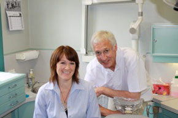

We are a General Dental Practice conveniently situated adjacent to the CBD in Dunedin, New Zealand's premier University City on the east coast of the South Island.
We offer dental services to an exceptional standard across a broad spectrum. Everything we do comes with
EXPERTISE, EXPERIENCE AND ENTHUSIASM.
We are interested in your teeth and general oral health, finding out what's wrong and sorting it out properly, whether it be toothache, accident damage, wisdom teeth, cosmetic or regular dentistry. In addition to establishing and maintaining your oral health we are usually able to improve the appearance of your teeth, frequently with dramatic results.
EXPERTISE

We are well qualified and equipped to ensure the successful diagnosis and treatment of any oral health issue. Not only through our basic training at world renowned dental faculties but also with ongoing Professional Development training to keep abreast of new developments and refine existing regimes.
See our dentist's profiles.
EXPERIENCE
We have over 50 years combined experience in our practice. We don't claim to have 'seen it all' - but we've seen a fair amount.
ENTHUSIASM
We enjoy what we do and have a friendly, inclusive and enthusiastic approach -right from your very first contact with our extremely knowledgable and helpful Practice Manager.